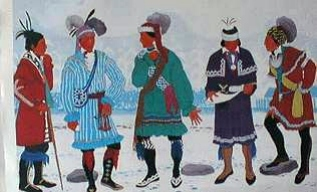
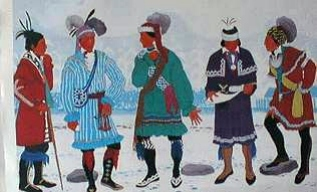

Signs for technical/specialized vocabulary
David Bar-Tzur
Links updated monthly with the help of LinkAlarm.
 

Jacques-Louis David, Napoleon Crossing the Saint-Bernardt.1; Native Americans - The Five Nations.
EXPLANATION OF THE GLOSSING SYSTEM
(to understand how I describe the signs in this dictionary).
For content knowledge of how to use the physics terms in context, see Guided tutorial in physics for interpreters.
For negotiating and developing temporary signs, see Preparation and sign negotiation
For vocabulary lists to determine helpful signs for a specific discipline, see Vocabulary lists by topic.
- Nachum (Bible)
- N-A-H.
- Nahi-Anil-Munkar (Shia)
- BAD HAPPEN, FORBID.
- Nahum [Heb. Nachum]
- N-A-H.
- nail
- [S] mimes swinging hammer once + [1], PO > NDS, is thrust between index and middle fingers of [B], PO > signer, FO > DS. For a QuickTime movie of this sign, see ASL browser - nail.
- Namibia
- [modified B with index finger folded into palm], PO > signer, FO down, is held in free space. (< shape of country.) To see the reference source for the sign(s) for this country or to look up other countries in the same geographical area, see Indigenous signs for countries. To find signs for cities within this country (some have no entries) see Indigenous signs for cities.
- nano- (10-9)
- N- [plus unit abbreviation].
- nanoampere
- N-A.
- nanofarad
- N-F.
- nanohenry
- N-H.
- nanometer
- N-M.
- nanosecond
- N-S.
- nanowatt
- N-W.
- nanuyim
- (2h)[A], press palms together and the hands are shaken to the left, then the right, over the shoulder, and forward. (< the palm branch shaken on the Jewish festival of Sukkoth.)
- Napoleon
- [B] moves as if thrusting hand into one's lapel.
- narc (narcotics officer)
- SECRET POLICE.
- narcotics
- The pinkie side of [S] or [A] is jammed multiple times into inside joint of elbow.
- nark (police informer, inform police)
- [S], PO down, FO > NDS, is held against mouth while the index finger is flicked out.
- narrative
- TELL-STORY.
- narrator
- STORY AGENT.
- narthex
- ENTER THEREABOUTS.
- nasal region
- NOSE + [5], PO > nose, FO up, moves in a small circle at the nose.
- National Aeronautics and Space Administration
- N-A-S-A.
- National Bureau of Standards
- N-B-S.
- National Electronics Distributors Association
- N-E-D-A.
- National Electrical Manufacturers Association
- N-E-M-A.
- National Oceanic and Atmospheric Administration
- N-O-A-A.
- National Public Radio
- N-P-R.
- National Science Board
- N-S-B.
- National Science Foundation
- N-S-F.
- National Society of Professional Engineers
- N-S-P-E.
- National Television Systems Committee
- N-T-S-C.
- native
- [N], PO down, circles [S], PO down from above and lands on it. For a QuickTime movie of this sign, see ASL browser - native.
- Native American
- (1) [F] touches FT to cheek and face several times while ascending slightly. For a QuickTime movie of this sign, see ASL browser - Native American. (2) (2h)[B], PO down, FT of DH rubs backhand of NDH in a circular pattern. Borrowed from Native American Sign Language.
- Nativity
- CHRIST BORN.
- Nativity of Christ (Eastern Orthodox name for Christmas)
- CHRIST BIRTHDAY.
- natural logarithm
- L-N.
- natural (number)
- [N], PO down, circles [S], PO down from above and lands on it.
- naturalism
- REPRESENT NATURAL.
- nausea
- [5:] touches stomach with FT and circles while making an expression of nausea. For a QuickTime movie of this sign, see ASL browser - nausea.
- nave
- CONGREGATION THEREABOUTS..
- navi [pl. neviim; feminine form neviah, pl. nevioth]
- PREDICT AGENT.
- navigate
- DRIVE THOUGH. For a QuickTime movie of this sign, see ASL browser - navigate.
- navy
- (1) (2h)[B^] both close to (2h)[O^] while contacting NDS hips, then repeat the action for DS hips. For a QuickTime movie of this sign, see ASL browser - navy. (2) SHIP.
- Nazareth
- "N" CITY.
- Nazi
- Execute the Nazi salute with DH and hold NDH [H] FT > up below nose like Hitler's moustache.
- n-channel metal oxide semiconductor
- N-M-O-S.
- near-death experience
- BY-A-HAIR DIE, HIT* VISUALIZE, where the first sign is [F] sharply plucks a hair from the head.
- near-sighted/ness
- The sign SEE is blocked by the other hand, PO away, to represent that only things that are near can be seen. For a QuickTime movie of this sign, see ASL browser - myopic.
- nebula
- MATERIAL CLOUDY, that is (2h)[bO], POs up, FOs away, are held in together in place while thumbs rub against FTs + (2h)[O^], NDHPO towards, DHPO away, touch at FTS , then move to opposite sides while opening to (2h)[5].
- Nechemyah (Bible)
- N-E-H.
- neck, necking (make out)
- (2h)[S] cross at wrists and nod as if making out.
- needle (of an instrument)
- DH [1], PO away, FO up, is held behind NDH [C], PO > DS, FO up, as if it were the frame to the meter, and the DH twists slightly as if it were the moving needle, then lift the DH up to single it out.
- needs assessment
- MUST INDEX-LIST A-JUDGE.
- nefesh
- (2h)[F], POs ><, DH is held above NDH and they separate with a wavy path.
- negative (photography)
- [N], strikes thumbside against palm of [B], PO away, FO up.
- negative of a vector
- VECTOR, ITS OPPOSITE.
- negative-positive-negative (transistor)
- N-P-N.
- negative positive 0 temperature coefficient (ceramic capacitor)
- N-P-O.
- negative temperature coefficient
- N-T-C.
- neglect (a person)
- (1) [S], PO > NDS, touches nose then moves in an outward arc towards the person being neglected while throwing it open into a [5]. (2) IGNORE. For a QuickTime movie of this sign, see ASL browser - neglect.
- neglected (person)
- [S], PO > NDS, touches nose then the hand is thrown against the chest while opening into a [5].
- negligible (error)
- IGNORE CAN.
- negotiate, negotiation
- [1], FO > NDS is placed in palm of [B] and both move to and fro together. For a QuickTime movie of this sign, see ASL browser -
negotiate.
- Nehemiah [Heb. Nechemyah]
- N-E-H.
- Ne'ilah
- YOM-KIPPUR PRAYER GATES GATES-CLOSE"step by step".
- nematic
- (2h)[4], POs > signer, touch FTs then separate several times while moving down to show a series of strands.
- neodymium
- N-D. For more information on this and other elements, see The elements. And for fun, see Elements by Tom Lehrer. To see this song with captions, go to The Elements song by Tom Lehrer.
- neon
- N-E. For more information on this and other elements, see The elements. And for fun, see Elements by Tom Lehrer. To see this song with captions, go to The Elements song by Tom Lehrer.
- Nepal
- [bC], PO away from signer, FO up, moves > DS while ascending and descending slightly. (< mountains on horizon.) To see the reference source for the sign(s) for this country or to look up other countries in the same geographical area, see Indigenous signs for countries. To find signs for cities within this country (some have no entries) see Indigenous signs for cities.
- neper
- N-P.
- Nephi (LDS [Mormon])
- [N] touches near mouth and then cheek.
- Nephites (LDS [Mormon])
- [N] touches near mouth and then cheek + GROUP.
- neptunium
- N-P. For more information on this and other elements, see The elements. And for fun, see Elements by Tom Lehrer. To see this song with captions, go to The Elements song by Tom Lehrer.
- ner tamid
- LIGHT-SHINE-DOWN CONTINUE++.
- nerve
- DH [S], PO down, FO > NDS, flicks index finger several times while resting on NDH [5], PO down, FO > DS, which represents the dendrites.
- neshama
- NDH [C] or [S] is held close to body and [F] which inserts FT into NDH then slowly draws it upwards with a wavy path.
- nest (for bird)
- [bO^] represents beak and is stuck into side opening of [C], PO away. For a QuickTime movie of this sign, see ASL browser - nest.
- nest (Computers)
- [G] inserts an imaginary entity into [C], POs ><.
- nested
- G] inserts a series of imaginary entities vertically, into [C], POs ><.
- nested loop
- (2h)[1], POs down, FTs touching, then DH moves in a small circle, then around back to original position. Next DH moves in a large circle, then around back to original position. Repeat if necessary to convey the concept.
- net
- (2h)[4], POs > signer, FOs up, cross paths while descending 2x with FT of DH rubbing across palm of NDH. For a QuickTime movie of this sign, see ASL browser - net.
- net force
- TOTAL "F", where the first sign is (2h)[5], NDHPO up, DHPO down, FOs away. Hands interchange POs, close to (2h)[O^], and end by touching FTs.
- Netherlands
- (2h)[5], touch FTs to temple and thumbs to base of head and separate while closing to [O^] and arcing up slightly. (< big Dutch hats.) To see the reference source for the sign(s) for this country or to look up other countries in the same geographical area, see Indigenous signs for countries. To find signs for cities within this country (some have no entries) see Indigenous signs for cities.
- net national product
- N-N-P.
- netilat, netilas yadayim (ritual hand washing)
- Imagine a large vessel, able to hold about 4 cups of water, with a handle on each side. The hands are washed by holding onto the vessel with the left hand and spilling water twice onto the right hand, then holding on with the right and spilling onto the left. Mime this action with an [S] for the holding hand and a [B], PO down for the hand poured on.
- Netscape
- [N] draws an "N" shape in the air.
- network
- (1) (2h)[open 8] touch middle fingers while twisting in opposite directions. (2) (2h)[5], POs down, FOs ><, move so that FOs are away and then move away, with DH touching NDH from above.
- network file server
- N-F-S.
- neurological, neurology
- N-POLITICS.
- neuron
- [S] flicks index finger and travels up the arm from wrist.
- neurophysiology
- NERVE FUNCTION.
- neurosis
- (1) (2h)[N] twist FTs into respective temples.
(2) (2h)[open 8] twist FTs into respective temples.
- neurotransmitter
- N-T.
- neutral (electricity)
- "N".
- neutral, neutrality
- SUPPORT NEITHER.
- neutralization, neutralize
- MAKE "N".
- neutralized
- FINISH "N".
- neutrino
- Index finger draws a nu (
 ).
).
- neutrino oscillation
- Index finger draws a nu () + TRANSER-BETWEEN-THREE-STATES, where the second sign has [V:], PO down, FO away, swing back and forth over NDH [3], PO away, FO up.
- neutron
- "N" PARTICLE.
- neutron star
- "N" STAR.
- Neviyim
- PROPHET WRITE+.
- New Jerusalem
- ~ (Christian)
- HEAVEN.
- ~ (Jewish)
- GOD BUILD JERUSALEM NEW*.
- New Year (Eastern Orthodox)
- NEW CHURCH YEAR.
- news
- N-E-W-S.
- newsletter
- INFORM LETTER. For a QuickTime movie of this sign, see ASL browser - newsletter.
- newton
- "N".
- newton-meter
- N-M.
- newton per square meter
- "N", then hand descends and signs "M" SQUARED.
- Newton's laws of motion
- N-E-W-T-O-N-'S LAW+ ABOUT MOVE.
- (1) An object continues in its state of rest or of uniform motion
unless compelled to change that state by an external force.
- EVERYTHING MATERIAL TEND STAY OR MOVE WITH SAME V-E-L, EXCEPT SOMETHING FORCE CHANGE.
- (2) For every action there is an equal and opposite
reaction.
- ANY FORCE EXPERIENCE FORCE-back #BACK. Where FORCE-back means to sign the force coming back at you.
- New Testament
- NEW T-LAW. For an animated gif of this sign, see Animated dictionary of religious signs - Deaf Missions: New Testament.
- New Zealand
- NDH [B], PO > DS, FO up. DH [N] slides down palm, then changes to [B^] and touches palm again. (< their fingerspelling of N-Z.) To see the reference source for the sign(s) for this country or to look up other countries in the same geographical area, see Indigenous signs for countries. To find signs for cities within this country (some have no entries) see Indigenous signs for cities.
- Nguzo saba (Seven principles [of Kwanzaa])
- SEVEN P-LAW + (2h)[1], FO up, DH behind NDH. The two hands separate while moving down and then rising up in an arc and opening to (2h)[3]. .
- 1. Umoja (Unity)
- (2h)[F], interlink FTs and move in horizontal circle.
- 2. Kujichagulia (Self-determination)
- FUTURE WHAT? THINK~SELF.
- 3. Ujima (Collective work and responsibility)
- WORK TOGETHER HELP-me HELP-you.
- 4. Ujumaa (Cooperative economics)
- E-MONEY + (2h)[F], interlink FTs and move in horizontal circle.
- 5. Nia (Purpose)
- THINK~MEAN, where the [V] that will be used for MEAN is brought up to the temple for "THINK" and perseverated for MEAN in the sense of "what does that mean?"
- 6. Kuumba (Creativity)
- (2h)[4], FOs up, alt. brush up respective temples.
- 7. Imani (Faith)
- (1) THINK~TRUST. TRUST = (2h)[5], DH above NDH, POs > signer, close to (2h)[S] as if grasping a rope that is attached to the stomach. (2) THINK~(2h)F-TRUST. For an animated gif of this sign, see Animated dictionary of religious signs - Deaf Missions: Faith.
- Nia
- THINK~MEAN, where the [V] that will be used for MEAN is brought up to the temple for "THINK" and perseverated for MEAN in the sense of "what does that mean?"
- Nicaragua
- DH [N], PO down, FO > NDS, brushes away from signer 2x with heel of palm on [A], PO down, FO >DS. To see the reference source for the sign(s) for this country or to look up other countries in the same geographical area, see Indigenous signs for countries. To find signs for cities within this country (some have no entries) see Indigenous signs for cities.
- "nick" (card)
- N-I-C.
- nickel (element)
- N-I. For more information on this and other elements, see The elements. And for fun, see Elements by Tom Lehrer. To see this song with captions, go to The Elements song by Tom Lehrer.
- nickel cadmium (rechargeable battery)
- N-I-C-A-D.
- Nidah
- MENSTRUATE, SEPARATE.
- Nigeria
- (1) [N] touches end of moustache. (2) [N], FO away, wiggles while held DS of mouth. To see the reference source for the sign(s) for this country or to look up other countries in the same geographical area, see Indigenous signs for countries. To find signs for cities within this country (some have no entries) see Indigenous signs for cities.
- night sweats
- ALL-NIGHT SWEAT.
- Night vigil prayer (قيام الليل)
- Too complex to describe, see Night vigil prayer (قيام الليل).
- niobium
- N-B. For more information on this and other elements, see The elements. And for fun, see Elements by Tom Lehrer. To see this song with captions, go to The Elements song by Tom Lehrer.
- nipples
- (1) (2h)[F], PO away, are brought towards breasts. (2) (2h)[F], PO > signer, are brought towards breasts.
- nirguna
- (1) SUPREME, DESCRIBE CAN'T. SUPREME is (2h)[A], FOs away, DH starts below NDH and arcs around it until it is on top. (2) SUPREME BEYOND PARALLEL.
- Nirvana
- SUFFER CYCLE"sta, sta, sta" ESCAPE.
- nitrogen
- ~ (free gas)
- "N" TWO'subscripted'. This is one of the "six diatomics" and when it's name is mentioned in a free state (which is a gas), the interpreter should sign this, rather than its chemical abbreviation.
- ~ (chemical abbreviation)
- "N". For more information on this and other elements, see The elements. And for fun, see Elements by Tom Lehrer. To see this song with captions, go to The Elements song by Tom Lehrer.
- nitrogenous base
- N-B.
- nitrous oxide
- N-O.
- nitrous oxides (pollution)
- N-O-X.
- Nixon, Richard
- N-LIE++. (< the lack of trust people had in his truthfulness.)
- Noah
- DH [N] is held against NDH [B^] like a person lying inside a BOAT.
- nobelium
- N-O. For more information on this and other elements, see The elements. And for fun, see Elements by Tom Lehrer. To see this song with captions, go to The Elements song by Tom Lehrer.
- noble
- [N], FO up, circles and lands on NDS of chest. For a QuickTime movie of this sign, see ASL browser - noble.
- Noble Eightfold Path
- NOBLE EIGHT WAY++.
- (1) right views
- OPINION PROPER.
- (2) right intention
- INTEND PROPER.
- (3) right speech
- COMMUNICATE PROPER.
- (4) right action
- ACT PROPER.
- (5) right livelihood
- WORK PROPER.
- (6) right effort
- TRY PROPER.
- (7) right-mindedness
- THINK PROPER.
- (8) right contemplation
- MEDITATE PROPER.
- no connection (electronics)
- N-C.
- nocturnal emission
- (1) WET DREAM. (2) DREAM, EJACULATE.
- nodal analysis
- NODE ANALYSIS.
- nodal point
- NODE POINT.
- node
- (2h)[1] POs roughly ><, midsection of DH finger strikes midsection of NDH finger from above. For a QuickTime movie of this sign, see ASL browser - intersection.
- no hormone, "no ho" (sexual reassignment surgery)
- N-O H-O.
- noise (auditory, signal, or psychological)
- Touch ear with index finger then (2h)[5], PO down, FO away, move antisymmetrically from side to side with clenched teeth.
- non- (prefix)
- NOT.
- non-baryonic matter
- (1) MATERIAL, BARYON HAVE-NONE, where the first sign is (2h)[bO], POs up, FOs away, are held in together in place while thumbs rub against FTs, and the last sign is (2h)[B], POs > signer move upwards past mouth and swing upwards and apart while mouth blows on hands as they pass. (2) MATERIAL Q-Q-Q, NOT.
- non-functional
- #NO-GOOD.
- non-gonococcal urethritis
- N-G-U.
- non-maskable interrupt
- N-M-I.
- non return to zero
- N-R-Z.
- non return to zero invert
- N-R-Z-I.
- non-verbal
- NOT WORD"each".
- non-volatile random access memory
- N-V-R-A-M.
- non-zero
- NOT ZERO.
- noodle
- (2h)[I], POs towards, touch FTs and separate twice. For a QuickTime movie of this sign, see ASL browser - noodle.
- no operation
- N-O-P.
- normal
- ~ (to a line or function)
- DH [1], FO down, touches, NDH [1], PO down, FO > DS.
- ~ (to a plane or surface)
- DH [1] touches NDH [B], PO down, FO > DS, then rises upwards.
- normality
- Show an "N" on the DH and place the NDH [bC], PO > DS, FO up, next to the letter with pc. (< uppercase "N" used as an abbreviation for "normality")
- normally closed (electronics)
- N-C.
- normally open (electronics)
- N-O.
- normal strain (Engineering)
- Draw a lowercase epsilon (
 ) in the air.
) in the air.
- North American Defense
- N-O-R-A-D.
- North-South pole reversal
- [N] is held at the top of an imaginary planet, and [S] is held below it, marking the poles, and the hands exchange positions.
- Norton's Theorem
- "N" 'S THEORY.
- Norway
- (1) [1], PO away from signer, moves in diagonal from NDS up to face, descends slightly, then continues diagonal upward. (2) [N], PO away, moves in diagonal from NDS up to face, descends slightly, then continues diagonal upward. (< side of mountain and shape of the letter "N".) To see the reference source for the sign(s) for this country or to look up other countries in the same geographical area, see Indigenous signs for countries. To find signs for cities within this country (some have no entries) see Indigenous signs for cities.
- nosedive
- [1^] touches tip of nose and then FT dives down. For a QuickTime movie of this sign, see ASL browser - nosedive.
- notation
- (2h)[1] cross at midfinger and wg while moving together > DS.
- not connected (Electronics)
- N-C.
- notebook
- PUT-DOWN + BOOK, where the first sign is [O^] touches FTs to [B], PO up, then changes to [B] and touches NDS palm to palm.
- notes (investment)
- N-O-T-E.
- notes payable
- N-O-T-E PAY CAN.
- not frequently used
- N-F-U.
- not recently used
- N-R-U.
- noun
- [N], PO > NDS, FO up, taps chin.
- nova
- STAR EXPLODE.
- novel
- N-O-V-E-L.
- nozzle
- (2h)[S], hold imaginary hose and DH which is above, twists twice at nozzle.
- N resonance baryon (N)
- DFOrms an "N" and NDH shows uppercase with a bC-CL.
- n-th power (x n)
- N'superscripted'.
- n-th root of x
- "N" + [1] draws a radical sign.
- n times
- Better to sign "N" DIFFERENT TIME instead of "N" TIME.
- nu ()
- Draw the shape of the letter in the air with the index finger.
- Nubuwwah
- FROM-TIME-TO-TIME ALLAH APPOINT PROPHET. APPOINT is [5], PO away, FO up, closes to [F] while moving > NDS and striking palm of [B], PO away, FO up, with its thumbside.
- nuclear
- N-CENTER.
- nuclear bulge (Astronomy)
- N-CENTER + (2h)[5:], DH PO down, NDH PO up, DH is held above NDH and the two hands separate vertically with pc.
- nuclear family
- PARENTS, CHILDREN, THAT'S-ALL.
- nuclear fission
- ATOM (2h)5:-CL'nucleus breaks open with (2h) supinating'.
- nuclear fusion
- ATOM + (2h)O-CL rush together to form one globe as a (2h)5:-CL.
- nuclear magnetic resonance
- N-M-R.
- nuclear reactor
- N-CENTER FACTORY.
- nucleotides
- N-U-C-L-E-O-T-I-D-E-S. The specific nucleotides are symbolized by their first letter: adenine = "A", thyamine = "T", guanine = "G", cytosine = "C", uracyl = "U".
- nucleus
- N-CENTER.
- null hypothesis (HO)
- H O"subscripted".
- null set
- NDH [1] strikes the thumbside of [O], PO > NDS, FO up.
- numb
- FEEL NONE. For a QuickTime movie of this sign, see ASL browser - numb.
- Numbers [Heb. B'midbar]
- N-U-M.
- numeral sequence
- NUMBER ORDER.
- numerator
- (1) [1] points to space above the NDH [B], PO down, FO > DS, where the numerator goes. (2) "N" is shaken below the NDH [B], PO down, FO > DS, where the numerator goes.
- numeric keypad
- NUMBER REGISTER-PANEL, where in the second sign the
fingers wiggle and move in a circle as if they were working a cash register.
- numerical control
- N-C.
- nun
- (1) (2h)[N] touch respective temples and then shoulders. For a QuickTime movie of this sign, see ASL browser - nun. (2) (2h)[B] touch FTs to respective temples and then shoulders. For a movie of this sign, see Dictionary of Sign (ASL) - nun. (3) (1h) version of (1). (4) (1h) version of (2). (< nun's traditional veil.)
- nurse (v)
- (1) With NDH indicate holding the baby and DH touches breast with open fingertips and then draws away while closing several times to indicate sucking. (2) Like (1), but no use of NDH. (3) BREAST FEED, where the second sign is (2h)[O^], POs up, FOs away, move forwards several times as if feeding. (4) FEED'from breasts', that is, (2h)[O^], POs up, FOs away, move forwards several times from wrist contact with breasts as if feeding.
- nurturance, nurture
- (1) FEED. For a QuickTime movie of this sign, see ASL browser - nurture. (2) (2h)[B], PO down are held high and swoop down while supinating and then rise up again as if helping something mature.
- nut (fastener)
- N-U-T.
- nutrient
- [N] strikes at DS corner of mouth + CHEMICAL.
- nutrition
- FT of [N] tap at DS corner of mouth.
Image credits
1. from http://134.74.216.129/history/reader/napoleon.htm (Napoleon crossing the Saint-Bernardt). This image and possibly the site is no longer extant.

Home